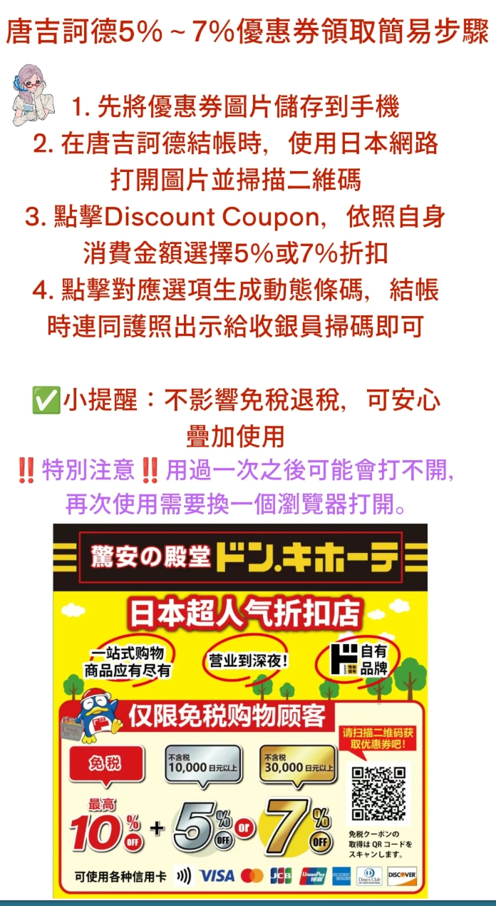
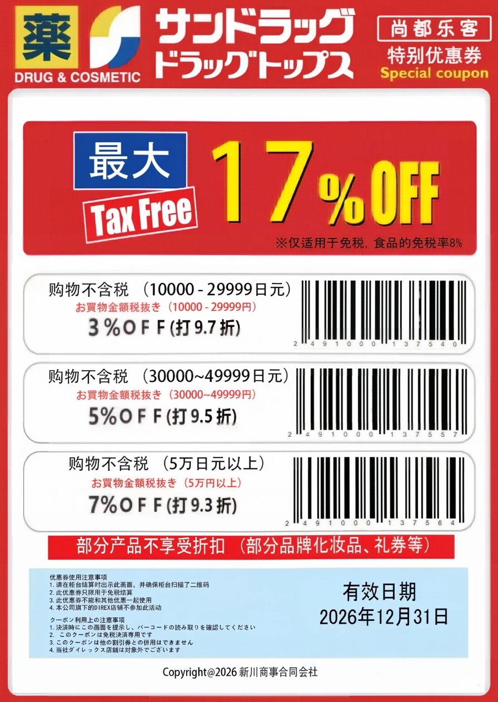
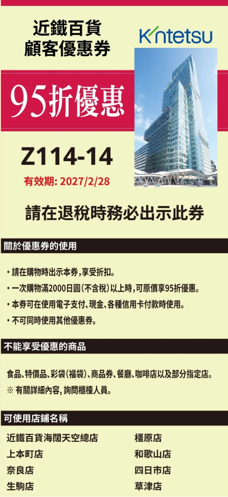
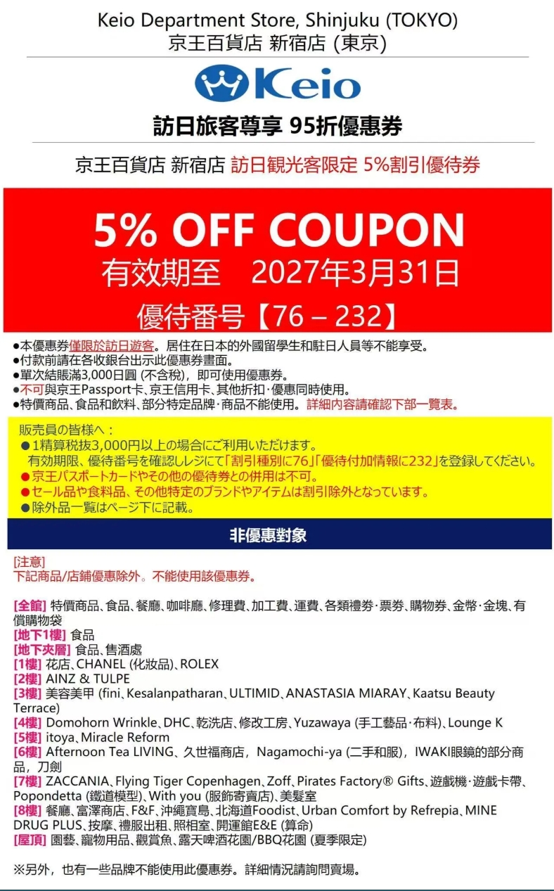

圖片放大
💡 掃碼請把螢幕調到最亮；點圖片可切換放大模式。
搭乘帝產巴士接駁專車前往 JR 函館站，步行約 6 分鐘即可抵達飯店。
推薦鄰近海灣的「碼頭末廣店」或「本店」，必點招牌中華雞腿堡。
漫步八幡坂、元町羅馬天主教堂等異國風情坡道。
冬季約 16:00 日落，建議提早上山，捕捉日落與雙海灣百萬夜景。
悠閒享受全日本評比前列的百匯美食。
退房後出發，沿途欣賞內浦灣海景與雪景。
冬夜來一碗辛香濃郁、辣度可調的湯咖哩暖胃（如 GARAKU 或 Suage+）。
札幌地標「白色戀人公園」全面改裝後保留夢幻歐式城堡風格，並加入許多互動體驗與全新拍照點。
浮誇巨型道具讓你瞬間變小人，還有療癒的投影互動遊戲。
小樽總鎮守，坡道上的巨大鳥居與浪漫紅燈籠參道。
🐟 蝦夷神籤：日進月歩みくじ（釣鯡魚籤）63 座瓦斯燈點亮後最浪漫；體力充足可上天狗山（《First Love 初戀》取景地），再搭車回札幌。
雪地自駕風險高，報名札幌出發的巴士團最輕鬆。通常含白鬚瀑布、青池、富良野精靈露臺。
🌽 美瑛神社：富諸来しみくじ（玉米籤）景點集中在函館、札幌、小樽，單買「北斗號」指定席更划算；長程跑多個跨區大景點才需考慮周遊券。
北海道超遼闊，跨城雪地移動極耗體力，一天一個重點區域剛剛好。
秋冬山頂易起大霧，出發前看氣象與即時影像，天候不佳就改行程。
富良野／美瑛點燈一日團極熱門，建議出發前 1–2 個月預訂。
白天團客多，傍晚至夜晚 63 座瓦斯燈點亮，雪中運河最浪漫上相。
付費園區（玻璃屋、工廠見學走廊）才是精華，還有限定甜點與伴手禮。
避開觀光客高價店，走進函館朝市、小樽三角市場或巷弄食堂，新鮮又實惠。
觀光客爆滿、部分標價偏高；札幌站周邊 BicCamera、大丸或在地超市品項齊、折扣大。
免稅 10% 再折 3%～8%，條碼都在下方 購物優惠券。
傍晚 5 點後或打烊前免稅櫃台常大排長龍，下午 3 點左右人最少。
郊區景點、溫泉旅館、神社御守、拉麵小店大多只收現金。
路面常有透明「黑冰」，務必穿深紋防滑大底雪靴，或在便利商店加購防滑冰爪。
隨身帶小垃圾袋，回飯店或利用便利商店分類垃圾桶丟棄。




Transaction ID 與 QR Code → 立刻拍照Global Blue – Shop Tax Free（英／日文）打開對應平台 ➜ 掃官方 QR ➜ 核對店家／金額／退稅額 ➜ 送出看狀態
找到 Transaction ID ➜ 在平台輸入 ➜ 核對資料 ➜ 完成登記
交易有出現、退款金額合理、狀態為「待處理／待退稅／已確認」（出境前顯示待處理屬正常）。
一般商品稅率 10%、食品 8%；金額為預估值，以店家實際退款為準，退稅款退給付款人。